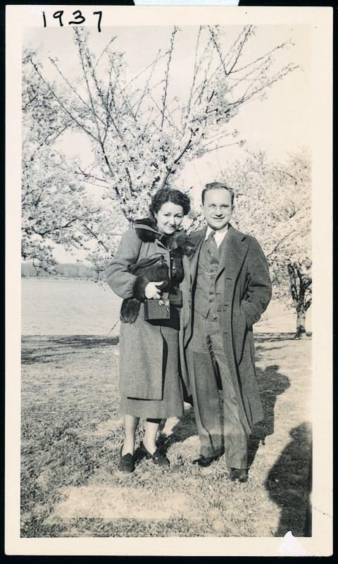
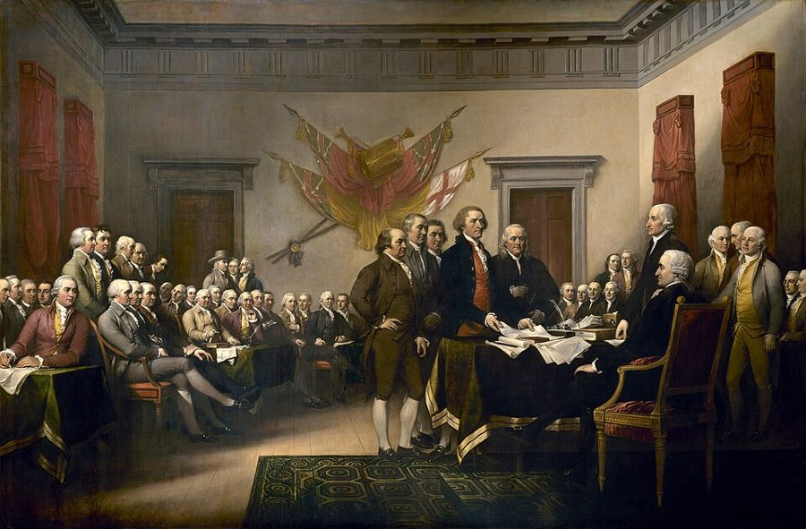
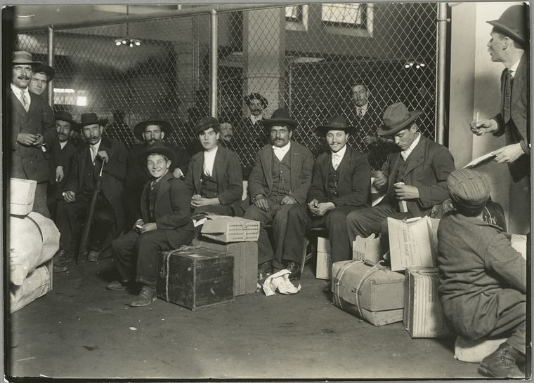

这本书是怎么来的
1980 年 1 月，美国公共电视台（PBS）开播十集节目《自由选择》（Free to Choose），经济学家 Milton Friedman 在镜头前讲市场和政府。同名的书同时出版，由他和妻子 Rose 合写，一章对应一集，当年就是美国最畅销的非虚构书之一。书的副题是「个人声明」：它不是教科书，是一份立场鲜明的主张。你手上的英文版是 1990 年的 Harvest 版，前面多了一篇两位作者写的新序言，回头看这十年。

Rose 和 Milton Friedman，1930 年代后期，两人 1938 年结婚。照片上手写的年份是 1937，档案说明写的是 1938。Hoover Archives，CC BY 3.0，维基共享资源
Milton Friedman 1912–2006 芝加哥大学经济学家，「芝加哥学派」的代表人物，1976 年获诺贝尔经济学奖。他最出名的是货币理论（第 3、9 章的底子），书里讲到他本人经历时用第一人称。
Rose Friedman 1910–2009，娘家姓 Director 也是经济学家，和 Milton 在芝加哥读研究生时认识。序言里致谢的 Aaron Director 是她哥哥，芝加哥法学院的经济学家；David D. Friedman 是他们的儿子。
三个版本怎么配合
你手上有英文纸书、Kindle、Audible 和张琦译本，这个站的每一章都同时照顾这几样：
章头写着这一章在三个版本里各在哪 ：纸书（Harvest 版）的页码、Kindle 里的章名、录音时长、译本的章名。译本的章和原书一一对应，按章号找就行。每章顶上有个开关：「这一章我读：英文原版 / 张琦译本」 ，各章分开记。读译本时，英文词条收起，分节地图先给译本的小节名。分节地图的每一节都标了三个位置 ：纸书页码、在这一章录音里大约第几分钟开始（按每分钟 160 词估，误差一两分钟）、译本里对应的小节名。译本的小节和原书几乎一一对应；原书每章开头、第一个小标题之前的那一段，译本里同样没有标题。词条里斜体的那几个词 是原句里连续的原文，Kindle 里搜它就能跳到那一句。
一个可行的读法：先听 Audible，听到卡住的那一节，打开分节地图看看这一节在讲什么，或者翻到译本同一节对一下。英文平实，难的往往不是生词，是 1970 年代美国的机构和经济学概念；这两样在每章的「背景」和「经济学」里先讲。
每章页面中间有一道「先停下，去读原书」。上面是读前的：下注、论证骨架、分节地图、背景、概念、词条；下面是读完再看的：回到你的赌注、反对作者的人怎么说、四十多年后的事实、理解检查和精彩回顾。
全书的论证地图
全书是一个「先给工具，再逐个领域去套」的结构。引言提出总论点；第 1 章给工具；第 2–9 章各挑一个政府插手很深的领域，看本意是什么、实际结果怎样、为什么会这样；第 10 章回到政治：既然结果这么糟，为什么这些政策还在扩张，又该怎么办。各章基本独立，读完第 1 章可以按兴趣挑。
引言：经济自由是政治自由的前提
第 1 章 工具
价格的三种功能 · 政府的四项职责
拿工具去过一遍八个领域：本意 → 实际结果 → 为什么
2 贸易与计划
3 大萧条与联储
4 福利
5 平等
6 教育
7 消费者
8 工人
9 通胀
结果都不如本意，为什么还在扩张？
第 10 章 政治
少数利益为何占上风 · 用宪法拴住政府
第 3、9 章讲货币，第 4、5 章讲福利和平等，可以成对读
本站画的示意图。章号旁边的名字是本站的概括，不是章名。 引言里还有一个贯穿全书的说法，值得先记住：作者说政治里也有一只「看不见的手」，方向和斯密的相反。
市场里（斯密）
只想着自己的利益
看不见的手
结果促进了公共利益
政治里（作者）
想着公共利益去推干预
另一只看不见的手
结果促进了私人利益
引言 §3；第 10 章用它解释为什么少数利益占上风
本站画的示意图。作者说到目前为止，第一只手的力量还压得住第二只，但不知道还能压多久。 读之前：先下注
这一页对应原书正文前面的三篇：1990 年的新序言、1979 年的初版序言、引言，合起来约 4400 词，一次读完。序言讲书怎么来的，引言才是全书的总论点。
这本书出版十年后（1990 年），柏林墙刚倒。两位作者回头看自己当年「潮流在转变」的判断，你猜他们怎么说？
太乐观了，潮流其实没变
完全应验：观念和政府的做法都大变了
观念变了，可政府的实际做法没怎么变
潮流转向了反方向，政府管得更多了，人们也更支持
美国从 1776 年二十个劳动力里十九个种地，到 1979 年不到一个，作者认为这个「农业奇迹」主要靠什么？
土地多：一整块空的大陆
政府：赠地、办农学院、推广技术
自由市场里私人的创新和冒险
源源不断的移民劳动力
分节地图
三篇各是一节，粗体是书里的标题。约 4400 词、半个多小时的录音，一次读完。读完一节回来打个勾。
Foreword to the Harvest Edition约 800 词 1990 年写的：十年后观念变了，做法没变；附了几组数字。最后读也行，读完全书再回来更有味道。 Preface约 1100 词 书的两个「父母」：1962 年的《资本主义与自由》和电视片。后半是致谢，最后两段讲为什么书比电视更能说服人。 Introduction约 2500 词 1776 年的两份文件、两个奇迹、农业的例子、两只看不见的手。这是全书的总论点，细读。
背景：作者默认你知道的事
按在书里出现的顺序排，标题前是节号。
§1 1990 年：「铁幕两边」新序言写于 1989 年底到 1990 年初。铁幕（Iron Curtain）指冷战时把苏联阵营和西方隔开的那条线。1989 年 11 月柏林墙开放，东欧各国的共产党政权在一两年内相继倒台。序言里的数字：美国各级政府开支占国民收入从 1980 年的 40% 到 1988 年的 42%；记录全部联邦法规的《联邦公报》（Federal Register）每年新增的页数。
1989 年墙开放之前，从西柏林看勃兰登堡门，门前那道涂满涂鸦的就是柏林墙。Thomas Roessler，CC BY-SA 3.0，维基共享资源
§2 《资本主义与自由》和电视片《资本主义与自由》（Capitalism and Freedom，1962）是 Friedman 夫妇的前一本书，篇幅短、偏理论，里面已经提出了教育代金券、负所得税等主张。《自由选择》是它的「具体版」。电视片由宾州伊利市的公共电视台负责人 Robert Chitester 发起，由伦敦的 Video-Arts 制作，这家公司是喜剧演员 John Cleese 和后来写《是，大臣》的 Antony Jay 等人 1972 年创办的。
§2 序言里点名的经济学家Anthony Downs、James M. Buchanan、Gordon Tullock、George J. Stigler、Gary S. Becker 都是用经济学方法研究政治的人，这一派叫公共选择（public choice）：把选民、官员、议员也看成追求自身利益的人。Stigler（1982）、Buchanan（1986）、Becker（1992）后来都得了诺贝尔经济学奖。作者说全书把政治体系和经济体系「对称地」看待，就是这个意思。
§3 1776 年的两份文件1776 年，斯密的《国富论》在伦敦出版，北美十三个殖民地发表杰斐逊（Thomas Jefferson）起草的《独立宣言》。作者把美国的「经济奇迹」归于前者，「政治奇迹」归于后者。§3 还引了 John Stuart Mill《论自由》（On Liberty，1859）里的「伤害原则」：权力只有为了防止伤害他人才能违背个人意愿使用。

John Trumbull 的油画《独立宣言》，画的是起草委员会向大陆会议提交宣言，站在中间、穿红背心的高个子是杰斐逊。John Trumbull，公有领域，维基共享资源 §3 移民，和书里的「今天」引言开头讲 19 世纪横渡大西洋（还有少数横渡太平洋）的移民潮。书里的「今天」是 1979 年：美国人口约 2.2 亿，作者说不到二十分之一的劳动力就能养活全国还大量出口粮食。赠地学院（land-grant colleges）是 1862 年起联邦政府赠地兴办的州立农工学院，附带的推广服务（extension services）把农业技术送到农户手里。

1908 年，纽约埃利斯岛移民站里等待检查的一群意大利移民。Lewis Wickes Hine，公有领域，维基共享资源 §3 《通往奴役之路》引言末尾提到的 road to serfdom，是奥地利出生的经济学家哈耶克（Friedrich Hayek）1944 年出版的《通往奴役之路》（The Road to Serfdom）的书名。哈耶克认为，政府一步步接管经济计划，最后会走向极权。它是 Friedman 这一代自由市场派的经典，引言用它的书名作警告。
词与短语
读英文时用；读译本的话可以跳过。词条按在书里出现的顺序排，按节分组；斜体小字是原句里连续的几个词，在 Kindle 里搜它就能找到那一句。标着「每个字都认识」的，是字面意思会把你带偏的。
§1 Foreword to the Harvest Edition
climate of opinion
… The climate of opinion was, we …
舆论风气，思想气候
全书反复出现，第 10 章的第一个小标题就讲它。
ivory tower
… in some ivory tower enclaves in …
象牙塔（脱离现实的学术圈）
enclave 是飞地，合起来是讽刺：只有学术圈的小角落里还有人信。
conventional wisdom
… Today conventional wisdom regards capitalism as …
一般人都这么认为的看法，通行的见解
不是「传统智慧」。下一段作者拿它和 conventional practice（通行的做法）对着说。
far from it
… become conventional wisdom? Far from it. …
远非如此，恰恰相反
know the words but not the tune
… They know the words, but they …
会背歌词，不会唱调子
比喻：嘴上说对了，做起来不会。
letup
… has there been much letup in …
减缓，停歇
eat out our substance
… our people and eat out our substance.”
吃光我们的家产
引自《独立宣言》，substance 是财产、家业。
a flash in the pan
… more than a flash in the pan.
昙花一现
本指老式火枪药池里的火药只闪一下、子弹没打出去。
anachronism
… hope that the occasional anachronism will …
（书里）过时的地方
flood tide
… far from the flood tide that …
涨潮的最高点
接着最后一章的标题 The Tide Is Turning 说：潮是转了，但离满潮还远。
§2 Preface
hard and fast line
… no hard and fast line how …
一成不变的界限，硬性规定
make up a balance sheet
… we must make up a balance sheet, …
列一张利弊清单
和第 1 章的 cast up a balance sheet 是同一个意思。
nuts and bolts
… there are more nuts and bolts, …
具体的实际细节
字面是螺母螺栓。
permeate
… the philosophy that permeates both books …
贯穿，渗透
enunciate
… find it advantageous to enunciate. …
（公开）宣称
意思是：人们嘴上说的目标，不一定是决定结果的东西。
allude to
… or allude to only briefly. …
略微提到
initiate into
… They initiated us gently but firmly …
引（新手）入门
smooth over
… smoothed over the difficult spots with …
把（难处）摆平
pare down to essentials
… to pare them down to essentials. …
削到只剩要点
pare 是削（水果皮、指甲）。
painstaking
… spent many hours of painstaking work …
一丝不苟的，费力的
let them simmer
… arguments, let them simmer, and after …
让它们慢慢炖（在心里琢磨）
simmer 是小火慢炖。
§3 Introduction
a trickle swelled into a flood
… An initial trickle swelled after the …
涓涓细流涨成洪流
说移民从零星到大批。
make the most of
… opportunity to make the most of …
充分利用
a clean slate
… It started with a clean slate: …
一张白纸，从头开始
slate 是石板，旧时学生用来写字，擦干净就是新的。
vestiges
… slate: fewer vestiges of class and …
残余，遗迹
fecundity
… The fecundity of freedom is demonstrated …
丰饶，多产
the shame of slavery only excepted
… the shame of slavery only excepted. …
唯一的例外是可耻的奴隶制
倒装的独立结构，读成 only excepting the shame of slavery。
march hand in hand
… Industry and agriculture marched hand in …
携手并进
an umpire, not a participant
… as an umpire, not a participant. …
当裁判，不下场
全书对政府角色最简短的说法。
the other side of that coin
… The other side of that coin …
事情的另一面
a pawn buffeted by forces
… as a pawn buffeted by forces …
被外力推来推去的小卒
pawn 是国际象棋里的兵；buffet 当动词是猛烈地推打。
stand on its head
… standing Jefferson’s dictum on its head …
把……完全颠倒过来
with a major assist from
… intentions with a major assist from …
在……的大力「助攻」下
assist 当名词是体育里的助攻。
drive home
… That conclusion is driven home again …
让人深刻认识到
deadening
… overcome the deadening effects of government …
使人麻木的，扼杀活力的
point of no return
… reached the point of no return. …
不可回头的那一点
本是航空用语：过了这一点，油不够飞回去了。
sing a different tune
… to sing a different tune—and perhaps …
改口，换个说法
呼应新序言里的 know the words, but not the tune。
nudge
… opportunity to nudge the change in …
轻轻推一把
到这里先停下，去读原书 下面是读完再看的：你押的注、反对作者的人怎么说、四十多年后的事实、值得细读的句子和理解检查。先看了，读书时就只是在找答案。
读完：回到你的赌注
作者押的是第三项（§1）：观念的变化比他们当年希望的还大，几乎没人再相信社会主义能带来繁荣和自由；可政府的实际做法没怎么变，开支占收入的比例没降，贸易限制反而多了。他们的原话是「懂了歌词，没学会调子」。后面九章讲的那些制度，十年后都还在。
作者押的是第三项（§3）：自由市场里的私人主动性。他承认政府给了地、办了赠地学院和推广服务，也承认工业革命提供了机器，但说政府在这段时期作用「微不足道」，而增长最快是在废除奴隶制之后。他拿实行中央计划、却要靠美国粮食免于饥荒的国家作对照。读第 1 章 §6 时，留意同样的论证又用在了香港身上。
作者十年后怎么看
1990 年的新序言里，两位作者自己做了一次「对照今天」。这里接着往后看。卡片左上角是本站的结论：
成立 后来的事实印证了这个说法部分成立 一部分对，一部分被后来的事改了被改写 后来的事实推翻了它，或者完全变了样书里的说法：观念变了，做法没变，管制的洪流没有减退
书里 1990 年序言：《联邦公报》1980 年新增 87,012 页，1988 年新增 53,376 页；政府开支占收入的比例没有明显下降（§1）。
当时（1990） 里根政府八年里页数确实降了近四成，但作者认为远远不够。
今天 《联邦公报》2024 年全年 106,109 页，是有记录以来最多的一年，超过此前 2016 年的 95,894 页。页数只是个粗略的指标（里面也有通知、更正、总统文告），但方向和作者的担心一致。核对于 2026-10。依据：美国竞争企业研究所（CEI）《一万条诫命》2025 年版引用的国家档案馆联邦公报办公室数据，Ballotpedia 的历年统计。
书里的说法：通胀降下来了，但远没有被征服
书里 美国通胀从每年 10% 以上降到 5% 以下，但作者提醒，第 9 章的分析仍然要紧，好让这次下降不只是昙花一现（§1）。
当时（1990） 沃尔克（Paul Volcker）领导的联储在 1980 年代初用高利率压下了通胀。
今天 此后三十年美国通胀大体稳定在低位。2021–2022 年又猛涨，2022 年 6 月消费者物价同比上涨 9.1%，是 1981 年 11 月以来最大的涨幅；之后回落，但到 2026 年仍未回到联储 2% 的目标。核对于 2026-10。依据：美国劳工统计局 2022 年 7 月 13 日发布的 CPI 报告；2026 年的情况据圣路易斯联储 FRED 的 PCE 物价指数（联储目标用的口径，2026 年 8 月同比约 3.4%）。
书里的说法：除了象牙塔和最落后的国家，几乎没人再相信社会主义
书里 1990 年序言：十年前很多人认为社会主义可行，今天世界上很少有人这样想（§1）。
当时（1990） 东欧剧变，苏联一年后解体，这个判断在当时很有说服力。
今天 盖洛普 2019 年 4 月的调查里，43% 的美国人认为「某种形式的社会主义」对国家是好事，51% 认为是坏事；1942 年同类调查里说好事的只有 25%。「社会主义」一词在美国的含义已经变了：同一份报告说，近四分之一的人把它理解成社会平等，理解成政府控制生产资料的只有 17%；但在作者最在意的美国本土，这个词没有像他们预期的那样失去吸引力。核对于 2026-10。依据：盖洛普 2019 年 5 月 20 日发布的调查（2019 年 4 月 17–30 日访问；1942 年的数字是文中引用的 Roper/Fortune 调查）。
和本站其他书对照
A Personal Odyssey · 芝加哥那几年 Thomas Sowell Sowell 在芝加哥读博士时，Friedman 是他的导师，以严格出名：上课迟到的学生会被请出去。Sowell 写他的价格理论课，课上读到的哈耶克的文章影响了他后来的研究。
去那一页 → A Man of Letters · 1973 年的信 Thomas Sowell 十年后，学生对老师的称呼从 Mr. Friedman 变成了 Milton。Friedman 想转载 Sowell 写给 Swarthmore 学院的一封信，Sowell 回信同意，又附上一封新的。
去那一页 →
值得停下来的句子
Conventional wisdom may have changed, but conventional practice has not.— §1，1990 年新序言。本站译：通行的看法也许变了，通行的做法却没变。
两个 conventional 对着用，前半让一步，后半转折。整篇新序言就是在展开这一句。读的时候注意 conventional wisdom 是个固定说法（经济学家加尔布雷斯让它流行起来），不是「传统的智慧」。
The only person who can truly persuade you is yourself.— §2，初版序言的末段。本站译：真正能说服你的，只有你自己。
出自一本说服之书的作者，这句话有点出人意料。前一句说，一晚上被说服的人，下一晚就会被持相反观点的人说服回去。这也是本站每章有「另一边怎么说」的理由：你需要两边都听过，才谈得上被说服。
The combination of economic and political power in the same hands is a sure recipe for tyranny.— §3，引言。本站译：经济权力和政治权力握在同一双手里，必定通向暴政。
主语是 the combination，谓语 is，后面 a sure recipe for（准保做出……的方子）是英语常见的说法。注意原书这里把 power 印成斜体，下一段开头又把 freedom 印成斜体：经济自由和政治自由结合带来黄金时代，经济权力和政治权力结合带来暴政。两句是镜像。
检查一下理解
先在心里答，再点开。答错的那题，回书里把对应那一节再读一遍。
1.（§1）1990 年，作者说这本书过时了吗？为什么？ 没有。观念变了，做法没变；而且自由市场今后更可能扩展，所以一本讲市场怎么运作、怎么清除障碍的书反而更有用。书里个别数字过时了，他们选择原样重印，不做表面的更新。
2.（§2）这本书和《资本主义与自由》有什么不同？ 那一本偏理论框架，这一本更具体，「螺母螺栓」更多；而且吸收了用经济学分析政治的新研究，把政治体系和经济体系同样看成各人追求自身利益的市场。
3.（§2）作者为什么认为书比电视更能说服人？ 电视诉诸情感，被时钟追着走；书能深入，读者能停下来想、往回翻。而且一晚上被说服的人不算真的被说服，只有自己反复琢磨之后才算。
4.（§3）作者说的两个「奇迹」各对应哪一份文件？ 经济奇迹对应斯密的《国富论》，政治奇迹对应杰斐逊起草的《独立宣言》，两份都发表在 1776 年。
5.（§3）作者说经济自由怎样帮助政治自由？ 一是让人不靠强制和中央指挥就能合作，缩小了政治权力管辖的范围；二是把权力分散开，可以抵消政治权力的集中。
6.（§3）作者说，大萧条为什么改变了美国人对政府的看法？ 大萧条其实是政府在货币上的失败造成的（第 3 章），却被普遍理解成自由市场的失败。于是人们从强调个人对自己负责，转向把个人看成受外力摆布的小卒，政府的角色从裁判变成了家长。
7.（§3）「政治里的看不见的手」是什么意思？ 想为公共利益推动政府干预的人，结果被一只看不见的手引向了促进私人利益，这不是他的本意。方向正好和斯密那只手相反。
用一句话说这本书要论证什么（读完全书再回来改）：